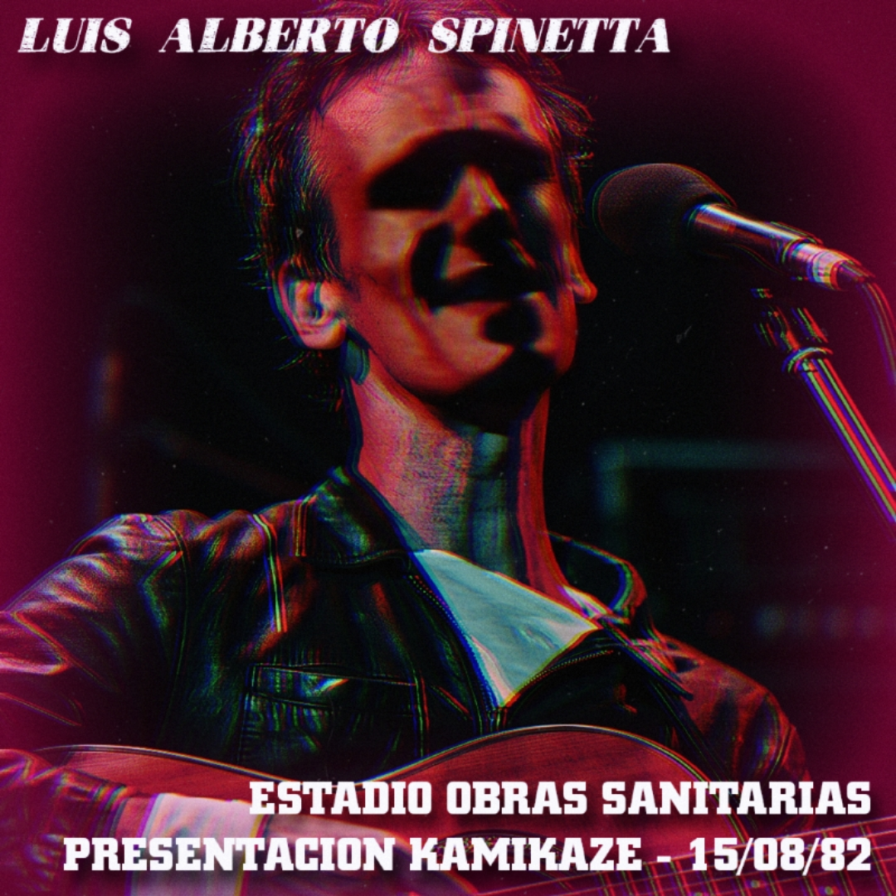

15 de agosto, 1982 - Estadio Obras, Buenos Aires

Los conciertos de Luis Alberto Spinetta en el Estadio Obras Sanitarias, realizados los días 14 y 15 de agosto de 1982, constituyen uno de los registros más significativos de su etapa solista. Estas presentaciones marcaron la puesta en escena de su álbum Kamikaze y representan un momento de transición estética, con un enfoque introspectivo y predominio de la guitarra acústica.
Argentina atravesaba los últimos meses de la dictadura militar, en un período posterior a la Guerra de Malvinas. El rock nacional adquirió una visibilidad inédita, favoreciendo la consolidación de espacios como el Estadio Obras como centros fundamentales de la cultura. El repertorio combinó composiciones de Kamikaze con un recorrido por Almendra, Pescado Rabioso e Invisible.
Aunque el material de Kamikaze es acústico y minimalista, su presentación en un espacio masivo generó un contraste particular. Los registros existentes no provienen de ediciones oficiales, sino de grabaciones de época, conservando la atmósfera genuina y la interacción directa con el público en un momento clave de la historia argentina.
Material difundido con fines culturales y de preservación histórica.